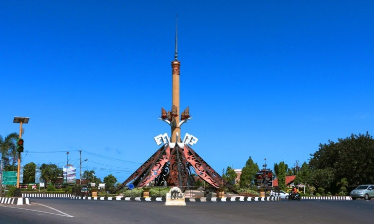

Berikut adalah data lengkap rumah sakit beserta profil wilayah Kabupaten Lampung Utara yang dapat digunakan sebagai referensi dalam mengakses layanan kesehatan di daerah ini.

Kabupaten Lampung Utara adalah salah satu kabupaten di Provinsi Lampung yang terletak di bagian utara. Wilayah ini memiliki ikon terkenal yaitu Tugu Payan Mas sebuah monumen berbentuk tombak emas di pusat Kota Kotabumi, melambangkan 9 marga Pepadun sebagai identitas budaya masyarakat Lampung Utara.
| Nama RS | Kode | Jenis | Tipe | Alamat |
|---|---|---|---|---|
| Candimas Medical Center | 1806038 | RSU | D | Jl. Lintas Sumatera No.12, Kalibalangan, Abung Selatan |
| RS Umum Handayani | 1806035 | RSU | C | Jl. Soekarno-Hatta No.94, Tanjung Aman, Kotabumi Selatan |
| RS Medika Insani | 1806039 | RSU | C | Jl. Sumber Jaya No.667, Tanjung Baru, Bukit Kemuning |
| RS Maria Regina | 1806037 | RSU | C | Jl. Abdoel Moeloek No.119, Tanjung Aman, Kotabumi Selatan |
| RSUD Mayjen HM Ryacudu | 1806013 | RSU | C | Jl. Jend. Sudirman No.12, Tanjung Harapan, Kotabumi Selatan |
| RS Umum Hi. Muhammad Yusuf | 1806036 | RSU | D | Jl. Lintas Sumatera No.12, Kalibalangan, Abung Selatan |